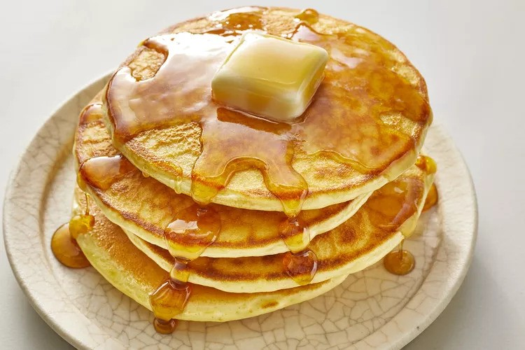

Old-Fashioned Pancake

Perfect pancakes are easier to make than you think.
This pancake recipe produces thick, fluffy, and all-around delicious pancakes with just a few ingredients
that are probably already in your kitchen (and it's so much better than the boxed stuff).
You'll find a detailed ingredient list and step-by-step instructions in the recipe below:
Ingredient:
- Flour
- Baking Powder
- Sugar
- Salt
- Butter
- Milk
- Eggs
- Buttermilk
Steps:
- In a large mixing bowl, whisk together the flour, sugar, baking powder, and salt
and ensure the ingredients are well combined.
- In a separate bowl, beat the egg and then add the buttermilk, regular milk, and melted butter
then mix the wet ingredients until well combined.
- Make a well in the center of the dry ingredients and pour the wet ingredients into it. Gently stir
until just combined, being careful not to overmix. A few lumps in the batter are okay.
- Preheat a griddle or non-stick pan over medium heat. Add a small amount of butter or oil
to coat the surface.
- Pour 1/4 cup portions of batter onto the griddle for each pancake. Cook until bubbles form
on the surface and the edges look set, then flip and cook the other side until golden brown
then repeat with the remaining batter